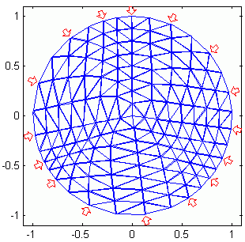

Lying with Regularization
Andy Adler, William R.B. Lionheart
In this document, we try to point out some
simple approaches that work with common, linear
regularization techniques. As the solution
strategy becomes more comples, then clearly there
become more advanced ways to cheat.
Sample Problem: The happy transform
To motivate the problem, assume that EIT measurement
data has been acquired from an image which resembles
a 'sad' face. Being of an optimistic outlook, we wish
that the image reconstructed represent a 'happy' face
instead. Fig. 1 illustrates this 'happy transform'.
→
Fig. 1:
The happy transform
Approach #1: Careful selection of noise
Typically, a reconstruction algorithm is presented
with added white Gaussian noise (WGN) to the data. One
technique to perform the happy transform is to
carefully select the noise.
In this case, we simulated a homogenous (vh)
and inhomogeneous (vi) data on a 256
element FEM. Subsequently 17.75dB of WGN was added to
vi, and the images reconstructed using
the algorithm of Adler and Guardo (1996).
Image were reconstructed with different
noise values, and reviewed by the author to determine which cases
corresponded to the happy transform. Fig. 2 shows two successful
'happy' images.
Fig. 2:
Images with 17.75dB WGN which were selected as 'happy'
In order to determine the frequency of 'happy' noise, 2000
images were reviewed and 41 were selected, corresponding
to an occurance rate of approximately 2%.
While careful noise selection is not a regularization technique,
it is commonly used in association with regularization research,
and thus merits mention here.
Approach #2: Careful selection of priors
The Bayesian framework for regularization interprets
the image penalty term as a priori information
about the underlying image probability distribution.
In practice, however, this term is selected using
ad hoc or heuristic techniques. If the prior does
not correspond to the real case, then the reconstructed
image will be biased. This idea is key for approach #2.
In a Tikhonov regularization scheme, image amplitude
is penalized. We use the following formulation:
x = (HtH +
λR)−1
Hty
where the regularization term
R = √( trace HtH )
If, however, we know that a priori
our data were measured from a happy face, then we
would not wish to penalize image pixels which we
know to be large. Thus for each pixel i
in the happy face, we set
Ri,i =
½ √( trace HtH
)i,i
The effect of careful prior selection is hown in Fig. 3.
In this case, images were reconstructed on a 576 element
FEM (chosen to differ from the 256 element simulation mesh).
Fig. 3:
Reconstructed images illustrating the effect of image priors,
using different mesh for model and reconstruction.
Images are numbered from left to right.
Image 1: Tikhonov prior with no weighting,
Image 2: Tikhonov prior with weighting for positions in sad face,
Image 3: Tikhonov prior with weighting for sad face (left) and
happy face (right),
Image 4: Tikhonov prior with weighting for positions in happy face,
In order to enhance this effect, we use an inverse crime,
by putting the Tikhonov prior information exactly where
it needs to be to get the happy face (Fig. 4).
Fig. 4:
Reconstructed images illustrating the effect of image priors,
using same mesh for model and reconstruction.
Images are numbered from left to right.
Image 1: Tikhonov prior with no weighting,
Image 2: Tikhonov prior with weighting for positions in sad face,
Image 3: Tikhonov prior with weighting for sad face (left) and
happy face (right),
Image 4: Tikhonov prior with weighting for positions in happy face,
Approach #3: Edge based priors
It is somewhat difficult to properly model a Laplacian filter
on a Finite Element mesh, but one way to approximate it is to
do the following: for each edge between elements i
and j, put 1 at i,i and j,j
and −1 at i,j and j,i.
Such a Laplacian filter can be used as a regularization prior
to penalize high frequency components (edges) in the image.
On the other hand, if we know where the edges are,
then edges should not be penalized (or be less penalized) in
those places. Fig 5 shows the effect of such careful
edge preserving prior selection (with no inverse crime).
Known edges are weighted at 0.3×that of other
edges in the image.
Fig. 5:
Reconstructed images illustrating the effect of edge
preserving image priors,
using different mesh for model and reconstruction.
Images are numbered from left to right.
Known edges are weighted at 0.3×that of other
edges in the image.
Image 1: Edge prior with no weighting,
Image 2: Edge prior with weighting for positions in sad face,
Image 3: Edge prior with weighting for sad face (left) and
happy face (right),
Image 4: Edge prior with weighting for positions in happy face,
In order to enhance this effect, we use an inverse crime,
by putting the Tikhonov prior information exactly where
it needs to be to get the happy face (Fig. 6).
Known edges are weighted at 0.3×that of other
edges in the image.
Fig. 6:
Reconstructed images illustrating the effect of edge
preserving image priors,
using same mesh for model and reconstruction.
Images are numbered from left to right.
Known edges are weighted at 0.3×that of other
edges in the image.
Image 1: Edge prior with no weighting,
Image 2: Edge prior with weighting for positions in sad face,
Image 3: Edge prior with weighting for sad face (left) and
happy face (right),
Image 4: Edge prior with weighting for positions in happy face,
An even more dramatic effect is obtained by setting the
penalty for Known edges to be zero (Fig. 7).
Fig. 7:
Reconstructed images illustrating the effect of edge
preserving image priors,
using same mesh for model and reconstruction.
Images are numbered from left to right.
Known edges are weighted at 0.0×that of other
edges in the image.
Image 1: Edge prior with no weighting,
Image 2: Edge prior with weighting for positions in sad face,
Image 3: Edge prior with weighting for sad face (left) and
happy face (right),
Image 4: Edge prior with weighting for positions in happy face,
Approach #4: Model mismatches
Mismatches between measured (or simulated) data and the
reconstruction model can be an excellent way to introduce
artefacts into the reconstructed images. Perhaps the
most common occurance in EIT is when electrode positions
are not exactly where they were in the model.
In order to simulate this effect, the geometry of
the simulation model (based on 256 elements) was randomly
deformed in the radial direction based on the three low
order harmonics of the angle. Fig. 8 shows an example
of this effect.
The electrodes are positioned at a radial distance of 1.0
and underwent an average movement of 0.091±0.035.

Fig. 8:
A finite element mesh deformed in the radial direction to
simulate the effect of model errors for electrode positions.
Simulations of model error were conducted and evaluated as
to whether they implemented the happy transform, as shown
in Fig. 9. Of 400 images, approximate 1% showed this effect.
Fig. 9:
Sample images reconstucted from a deformed finite element
mesh. Some images were chosen which implement the happy
transform, while others were chosen because they appeared
humerous.